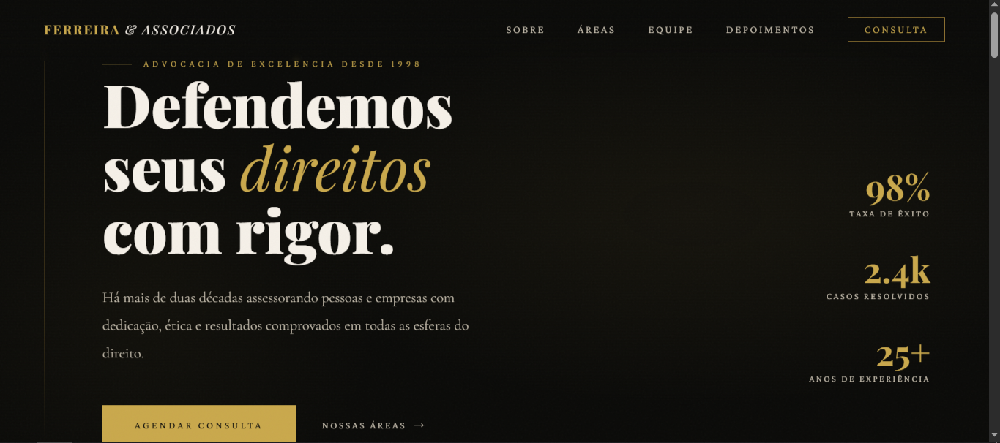
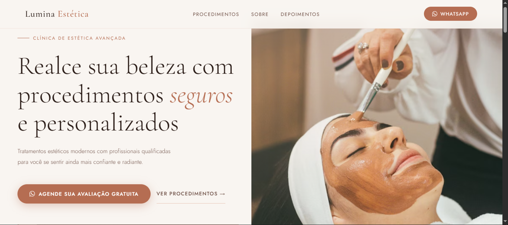
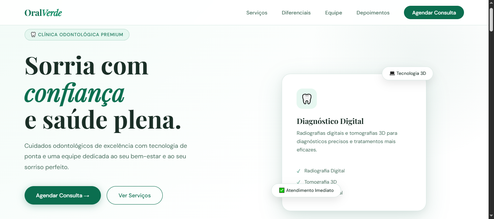

Geovane Allen
Desenvolvedor Front End
Desenvolvedor Front End
Sou um desenvolvedor front-end apaixonado por tecnologia e pelo impacto que o desenvolvimento web pode causar na experiência dos usuários. Minha missão é transformar ideias em interfaces modernas, responsivas e intuitivas, criando experiências únicas para cada projeto. Com habilidades em HTML, CSS e JavaScript, venho desenvolvendo projetos que unem design, performance e acessibilidade, sempre buscando inovação e aprimoramento contínuo. Acredito que cada linha de código deve proporcionar não apenas funcionalidade, mas também uma navegação fluida e envolvente. Aqui no meu portfólio, você encontrará alguns dos meus trabalhos, onde aplico minha criatividade e conhecimento para desenvolver soluções eficientes e visualmente atraentes. Estou sempre aberto a novos desafios e oportunidades para evoluir como profissional.

Landing page institucional desenvolvida com foco em apresentação clara dos serviços e proposta educacional. Interface responsiva, com design moderno, boa hierarquia visual e experiência do usuário otimizada. Projeto em HTML, CSS e JavaScript, priorizando performance e conversão de clientes.

Landing page para academia com foco em geração de leads e apresentação estratégica de planos e diferenciais. Estrutura orientada à conversão, com navegação direta e layout otimizado para reduzir fricção. Desenvolvido em HTML, CSS e JavaScript, com alta performance e responsividade.

Landing page institucional para escritório de advocacia, com foco em credibilidade, apresentação de serviços jurídicos e captação de clientes. Design sóbrio, estruturado e responsivo, com navegação objetiva e otimização para performance em ambiente web moderno.

Landing page para clínica de estética desenvolvida com foco em posicionamento premium, destacando serviços, benefícios e prova social para aumentar a percepção de valor. Interface elegante e responsiva, estruturada para gerar confiança e conversão de clientes em um mercado altamente competitivo.

Site institucional em desenvolvimento para concessionária automotiva com foco em exposição de veículos, organização de catálogo e estímulo à conversão de leads. Estrutura pensada como showroom digital, com navegação objetiva e elementos estratégicos para acelerar o processo de decisão do cliente.

Landing page para clínica odontológica estruturada para transmitir confiança, apresentar especialidades e facilitar o agendamento de consultas online e presencial. Interface limpa e funcional, com foco em clareza das informações, experiência do usuário e incentivo direto à conversão de clientes.